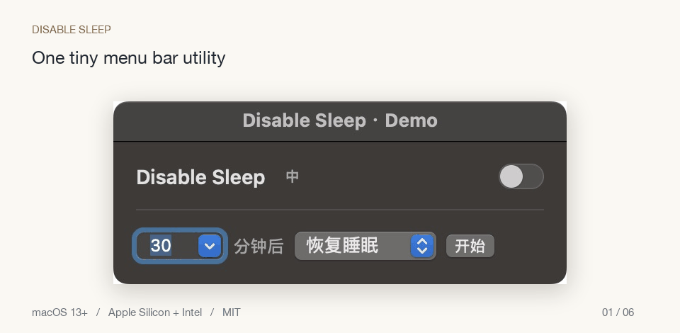

Right where you need it.
Click the sun or moon in your menu bar. One-time authorization, then password-free switching.
Keep your Mac awake from one tiny menu bar switch. Set a countdown, or choose Never—with battery and thermal safeguards watching your session.
Free & open source · macOS 13+ · Apple Silicon + Intel

The real native interface, shown in demo mode.
Click the sun or moon in your menu bar. One-time authorization, then password-free switching.
Pick minutes or Never. Switch off to pause a countdown; switch on to resume. Safety limits still apply.
A tiny 中 / EN button, native Swift controls, and no accounts, analytics, or app dependencies.
Let a large transfer finish while you step away.
Give a long task the time it needs, with a countdown.
Keep your existing SSH or remote workflow reachable.
Keep your Mac on a ventilated surface. A sleeping Mac cannot run checks until wake, and missing authorization or disabled background execution can prevent recovery. Read the limits ↗
One Universal build for Apple Silicon and Intel. The 1.5.0 LidOff release is being prepared.
LidOff changes pmset's system-wide disablesleep setting for closed-lid work. KeepingYouAwake wraps caffeinate and explicitly documents that it does not support a closed lid. LidOff restores sleep at the end of a session; behavior still needs checking on your hardware and macOS version. KeepingYouAwake's explanation ↗
Keep display awake alone only prevents display sleep. The separate Prevent idle lock (experimental) option also renews local user activity every 15 seconds during a session and holds the display awake. It writes no display, screen-saver or password preferences. It cannot unlock a Mac or override managed policy. Actual idle-lock prevention still needs an idle-duration check on your macOS version; do not treat it as a verified guarantee.
Community builds are locally signed, not Apple-notarized. If macOS blocks the download, use Privacy & Security → Open Anyway only if you trust the source. No system-wide security protections need disabling. Apple's instructions ↗
Setup grants your account exactly two password-free commands: pmset -a disablesleep 0 and 1. Other processes under your account can use them too. Use Options & safety → Remove authorization and quit before deleting the app to restore sleep and remove authorization, login registration and the watchdog. Full removal instructions ↗
No. A sleeping Mac runs no checks until wake. The independent watchdog can restore sleep after a deadline or app crash while logged in, and reconciles at next login. Turning LidOff off pauses the timer.